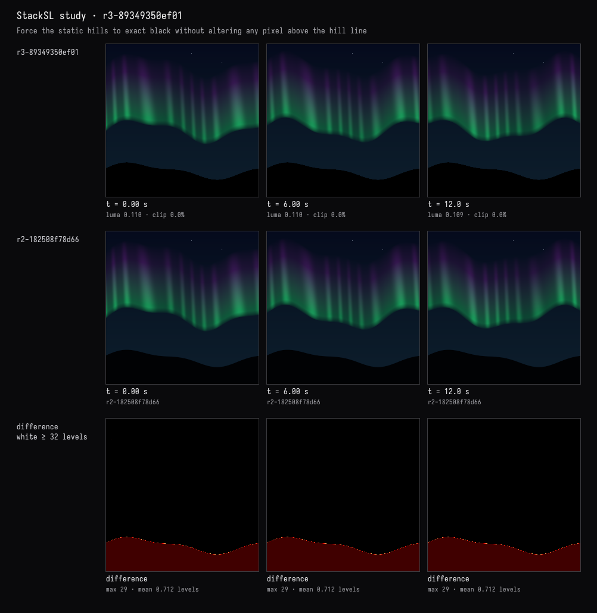

Still, black hills
The recorded exchange: the request, the tool activity, every image the tools returned to the model, and its reply. Expand tool activity to read the steps; open an image to see it full size.
The hills must stay perfectly still and black. Check whether anything moves below the horizon, and if it does, fix it without touching the sky.
Tool activity · 3 steps
Starting AI conversation
InspectStackSLStudy finished (1 ms)
Waiting for model
The hill shape has no time dependence, and the aurora is masked out below it, so the hills should already be still. They aren’t pure black, though, and the softened edge blends sky colour just below the hill line. I’ll make everything below that line exactly black while preserving the sky above it.
Tool activity · 4 steps
StackSLStudyGuide finished (0 ms)
PatchStackSLStudy finished (1444 ms)
Waiting for model
Completed

The hills were already motionless, but slightly blue-black with a blended edge. They are now exactly black below the unchanged hill line, with no time-dependent contribution.
Verified at 0, 6, and 12 seconds. The comparison shows changes only below the hill line; the sky and aurora are untouched. Compilation and checks passed.